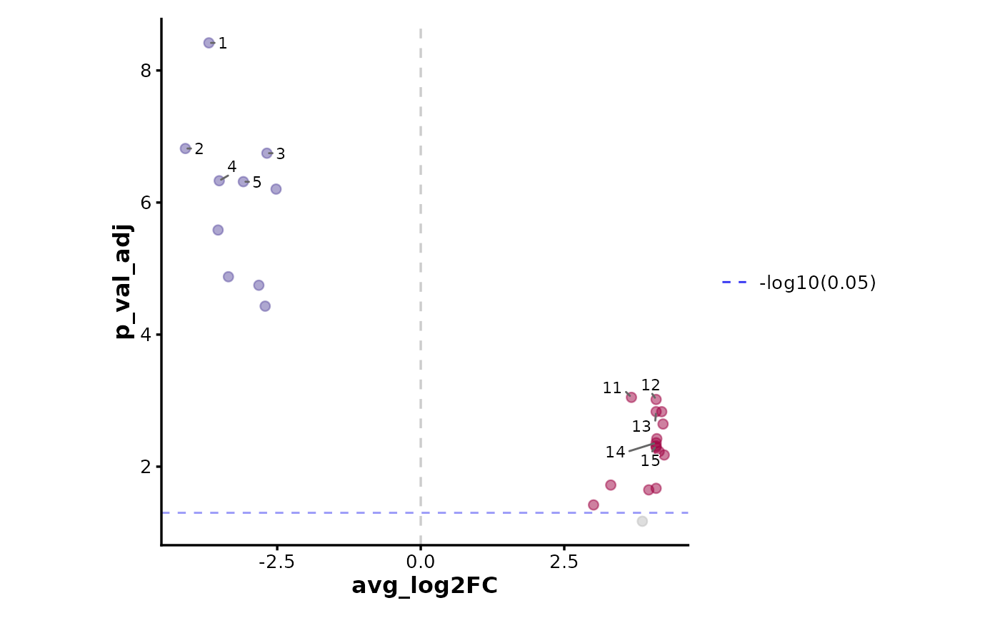
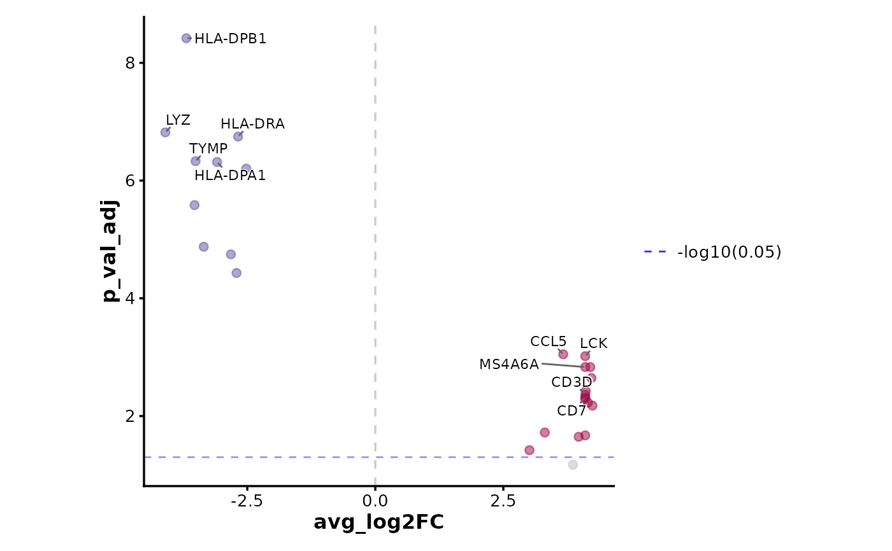
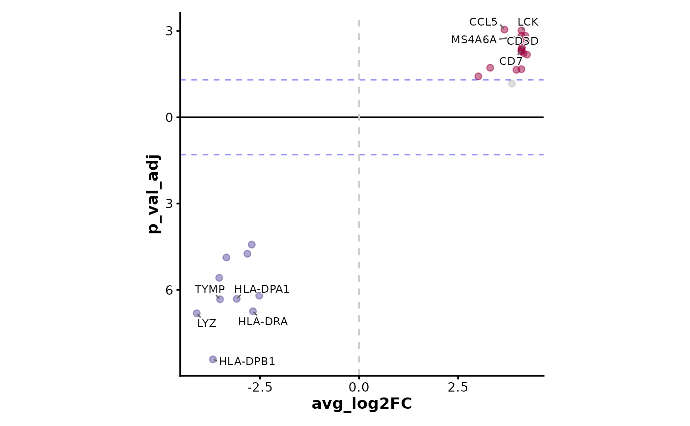
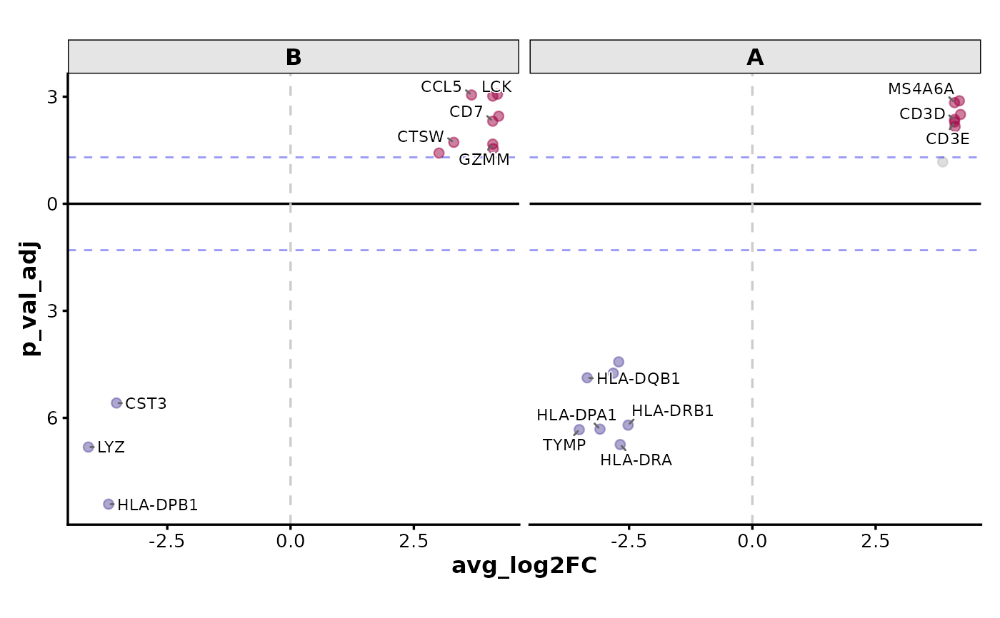

A volcano plot is a type of scatter plot that shows statistical significance (usually on the y-axis) versus magnitude of change (usually on the x-axis).
Usage
VolcanoPlot(
data,
x,
y,
ytrans = function(n) -log10(n),
color_by = NULL,
color_name = NULL,
flip_negatives = FALSE,
x_cutoff = NULL,
y_cutoff = 0.05,
trim = c(0, 1),
xlim = NULL,
x_cutoff_name = NULL,
y_cutoff_name = NULL,
x_cutoff_color = "red2",
y_cutoff_color = "blue2",
x_cutoff_linetype = "dashed",
y_cutoff_linetype = "dashed",
x_cutoff_linewidth = 0.5,
y_cutoff_linewidth = 0.5,
pt_size = 2,
pt_alpha = 0.5,
nlabel = 5,
labels = NULL,
label_by = NULL,
label_size = 3,
label_fg = "black",
label_bg = "white",
label_bg_r = 0.1,
highlight = NULL,
highlight_color = "red",
highlight_size = 2,
highlight_alpha = 1,
highlight_stroke = 0.5,
split_by = NULL,
split_by_sep = "_",
facet_by = NULL,
facet_scales = "fixed",
facet_ncol = NULL,
facet_nrow = NULL,
facet_byrow = TRUE,
theme = "theme_ggforge",
theme_args = list(),
palette = "Spectral",
palcolor = NULL,
title = NULL,
subtitle = NULL,
xlab = NULL,
ylab = NULL,
aspect.ratio = 1,
legend.position = "right",
legend.direction = "vertical",
seed = 8525,
combine = TRUE,
nrow = NULL,
ncol = NULL,
byrow = TRUE,
axes = NULL,
axis_titles = NULL,
guides = NULL,
design = NULL,
...
)Arguments
- data
A data frame containing the data to plot
- x
A character string of the column name to plot on the x-axis (e.g., log fold change).
- y
A character string of the column name to plot on the y-axis (e.g., p-value).
- ytrans
A function to transform the y-axis values. Default is
-log10(n).- color_by
A character vector of column names to color the points by. If NULL, the points will be filled by the x and y cutoff value.
- color_name
A character string to name the legend of color.
- flip_negatives
A logical value to flip the y-axis for negative x values.
- x_cutoff
A numeric value to set the x-axis cutoff. Both negative and positive of this value will be used.
- y_cutoff
A numeric value to set the y-axis cutoff. Note that the y-axis cutoff will be transformed by
ytrans.- trim
A numeric vector of length 2 to trim the x-axis values. The values must be in the range from 0 to 1, which works as quantile to trim the x-axis values. For example, c(0.01, 0.99) will trim the 1% and 99% quantile of the x-axis values.
- xlim
A numeric vector of length 2 to set the x-axis limits.
- x_cutoff_name
A character string to name the x-axis cutoff. If "none", the legend for the x-axis cutoff will not be shown.
- y_cutoff_name
A character string to name the y-axis cutoff. If "none", the legend for the y-axis cutoff will not be shown.
- x_cutoff_color
A character string to color the x-axis cutoff line.
- y_cutoff_color
A character string to color the y-axis cutoff line.
- x_cutoff_linetype
A character string to set the x-axis cutoff line type.
- y_cutoff_linetype
A character string to set the y-axis cutoff line type.
- x_cutoff_linewidth
A numeric value to set the x-axis cutoff line size.
- y_cutoff_linewidth
A numeric value to set the y-axis cutoff line size.
- pt_size
A numeric value to set the point size.
- pt_alpha
A numeric value to set the point transparency.
- nlabel
A numeric value to set the number of labels to show. The points will be ordered by the distance to the origin. Top
nlabelpoints will be labeled.- labels
A character vector of row names or indexes to label the points.
- label_by
A character string of column name to use as labels. If NULL, the row names will be used.
- label_size
A numeric value to set the label size.
- label_fg
A character string to set the label color.
- label_bg
A character string to set the label background color.
- label_bg_r
A numeric value specifying the radius of the background of the label.
- highlight
A character vector of row names or indexes to highlight the points.
- highlight_color
A character string to set the highlight color.
- highlight_size
A numeric value to set the highlight size.
- highlight_alpha
A numeric value to set the highlight transparency.
- highlight_stroke
A numeric value to set the highlight stroke size.
- split_by
Column name(s) to split data into multiple plots
- split_by_sep
Separator when concatenating multiple split_by columns
- facet_by
Column name(s) for faceting the plot
- facet_scales
Scales for facets: "fixed", "free", "free_x", "free_y"
- facet_ncol
Number of columns in facet layout
- facet_nrow
Number of rows in facet layout
- facet_byrow
Fill facets by row (TRUE) or column (FALSE)
- theme
Theme name (string) or theme function
- theme_args
List of arguments passed to theme function
- palette
Color palette name
- palcolor
Custom colors for palette
- title
Plot title
- subtitle
Plot subtitle
- xlab
X-axis label
- ylab
Y-axis label
- aspect.ratio
Aspect ratio of plot panel
- legend.position
Legend position: "none", "left", "right", "bottom", "top"
- legend.direction
Legend direction: "horizontal" or "vertical"
- seed
Random seed for reproducibility
- combine
Whether to combine split plots into one
- nrow
Number of rows when combining plots
- ncol
Number of columns when combining plots
- byrow
Fill combined plots by row
- axes
How to handle axes in combined plots ("keep", "collect", "collect_x", "collect_y")
- axis_titles
How to handle axis titles in combined plots
- guides
How to handle guides in combined plots ("collect", "keep", "auto")
- design
Custom layout design for combined plots
Examples
# \donttest{
set.seed(8525)
# Obtained by Seurat::FindMarkers for the first cluster of pbmc_small
data <- data.frame(
avg_log2FC = c(
-3.69, -4.10, -2.68, -3.51, -3.09, -2.52, -3.53, -3.35, -2.82, -2.71,
3.67, 4.79, 10.14, 5.36, 4.56, 4.62, 3.31, 4.72, 3.01, 3.86
),
p_val_adj = c(
3.82e-09, 1.52e-07, 1.79e-07, 4.68e-07, 4.83e-07, 6.26e-07, 2.61e-06,
1.33e-05, 1.79e-05, 3.71e-05, 8.93e-04, 9.61e-04, 1.47e-03, 4.35e-03,
4.85e-03, 5.12e-03, 1.90e-02, 2.13e-02, 3.80e-02, 6.72e-02
),
gene = c(
"HLA-DPB1", "LYZ", "HLA-DRA", "TYMP", "HLA-DPA1", "HLA-DRB1", "CST3",
"HLA-DQB1", "HLA-DRB5", "LST1", "CCL5", "LCK", "MS4A6A", "CD3D", "CD7",
"CD3E", "CTSW", "GZMM", "GZMA", "IL32"
),
group = sample(LETTERS[1:2], 20, replace = TRUE)
)
VolcanoPlot(data, x = "avg_log2FC", y = "p_val_adj", y_cutoff_name = "-log10(0.05)")

VolcanoPlot(data,
x = "avg_log2FC", y = "p_val_adj",
label_by = "gene", y_cutoff_name = "-log10(0.05)"
)

VolcanoPlot(data,
x = "avg_log2FC", y = "p_val_adj", y_cutoff_name = "none",
flip_negatives = TRUE, label_by = "gene"
)

VolcanoPlot(data,
x = "avg_log2FC", y = "p_val_adj", y_cutoff_name = "none",
flip_negatives = TRUE, facet_by = "group", label_by = "gene"
)

VolcanoPlot(data,
x = "avg_log2FC", y = "p_val_adj", y_cutoff_name = "none",
flip_negatives = TRUE, split_by = "group", label_by = "gene"
)
 # }
# }